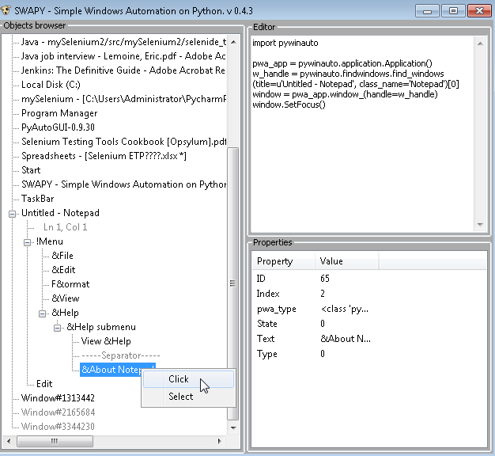

alt+`,6 显示版本历史
书签菜单 F11
切换书签保存 ctrl+F11 显示书签 shift+F11
收藏菜单 alt+shift+f alt+2
ctrl+y ctrl+k
alt+insert 新建文件
ctrl+j 插入活动模版
ctrl+, 工具栏按钮
ctrl+m 滚动到中心
ctrl+e 最近打开文件
alt+`,6 显示版本历史
______
alt+↔ tab切换
ctrl+alt+↔ 分割切换
CTRL+P 参数信息
ctrl+O 继承父类方法重写
ctrl+I 实现方法
ctrl+F12 ctrl+t 文件结构
ctrl+alt+F12 文件路径
Alt+home 文件导航
Alt+鼠标上键 显示使用
#跳转到 [中键]
ctrl+B 到声明
ctrl+alt+B 到实现
ctrl+shift+T 到测试
#层次结构 建议更换为 ctrl+r
ctrl+H 类型层次结构
ctrl+alt+H call层次结构
ctrl+shift+H 方法层次结构
ctrl+shift+space 显示参数信息, 内置可用↓
ctrl+Q 快速文档 alt+左键
ctrl+shift+i快速定义 alt+下
#代码
##提取
ctrl+alt+v 到变量
"\n",
PyAutoGUI&PyWinAuto¶

這篇文章主要說明遇到 Windows native UI 時候或是Windows Application 時，如何進行自動化測試?
Selenium的自動化測試僅限於 Web UI，對於 Windows UI 或是 Windows 應用程式(例如小算盤)往往無法處理。
有什麼方式可以直接在 python 處理Windows UI 而不需要額外呼叫外部 AutoIT 所編譯的 EXE?
這篇文章介紹兩個方式，不儘 Windows 適用，Mac/Linux 也可以。最後給完整的程式範例說明。
方法一：畫面圖形比對的方式 PyAutoGUI¶
工具主角:PyAutoGUI
安裝方式¶
| pip install PyAutoGUI |
優缺點¶
這個方式最大的好處是跨平台 Windows, Mac, Linux 都可以適用，因為採用圖形比對的關係也比較直覺。
缺點就是圖形比對來找畫面元件的操作方式，誤判或是失敗的機率會比較高。
另外，由於主要是用滑鼠作標的關係，因此螢幕解析度也有可能會影響程式的進行。
實作範例¶
我們主要用小算盤為例子。舉例來說，如果我們要點擊小算盤的 “7”。
我們可以截取一張圖如下，檔名為cal7.png。(檔案格式一定要是PNG)

執行下列 python 程式後，就會點擊到 7
import pyautogui
#pyautogui.moveTo( pyautogui.size(),duration=2)
button7location = pyautogui.locateOnScreen('c:\\cal7.png')
pyautogui.click(button7location)要注意的是如果執行時小算盤被其他畫面遮到，那麼執行就會失敗。
因此，執行這類的程式時，必須要確保小算盤在螢幕上可以被看見。沒有被其他 Window 遮住。
技術參考資料¶
https://pypi.python.org/pypi/PyAutoGUI
https://pyautogui.readthedocs.org/en/latest/index.html
分法二: Windows ObjectID 的方式 PyWinAuto + SWAPY¶
工具主角: PyWinAuto + SWAPY
安裝方式¶
1. 首先安裝 PyWinAuto
| pip install pyWinAuto |
2. 下載 SWAPY (Simple Windows Automation on Python)
SWAPY 為一個獨立的執行工具 ，可以在這裡下載安裝：
https://swapy.googlecode.com/files/swapy-ob-0.4.3.exe
優缺點¶
PyWinAuto 這個方式主要透過 Windows Object locator 來定位 Windows 元件。
缺點是只能限定在 Windows 平台使用。
優點是透過 ObjectID 的方式定位，比較不會像圖形比對那樣失敗或是受到畫面修改的影響。
另外一個最大的優點是，我們可以透過 “SWAPY”這個工具自動產生程式!
測試情境¶
我們主要會自動執行下列動作：
1. 啟動 notepad
2. 用電腦自動點選 Help > About Notepad
為什麼用 SWAPY實作¶
雖然我們可以直接寫 PyWinAuto 的程式，但是筆者還是建議用 SWAPY 這個工具來直接產生。因為這個工具 SWAPY 就好比是瀏覽器的 Web element inspector ，可以看 Windows 物件的狀況，幫助我們定位並且做適當的動作 (click..)
1. 首先先啟動 notepad.exe
2. 接著再啟動 SWAPY。
因為 SWAPY 沒有 refresh 的功能，所以如果先啟動 SWAPY 之後再啟動 notepad的話，SWAPY 會找不到 notepad.exe
如果開啟的視窗比較多的話，一開始啟動的時間會比較久一些。
SWAPY 實作使用步驟¶
1. 啟動SWAPY之後，找到 “Untitled – Notepad” > 右鍵 > “Set Focus”
2. 展開 menu > &About Notepad > 右鍵 > “(click” 如下圖所示)
3. SWAPY 就會自動完成，右手邊 Editor 的相關 python 程式! 是不是很方便。
[
由於notepad.exe 是我們手動所啟動，所以要將該 python 程式自動化執行，每次都會自動啟動 notepad
所以上述自動產生程式最上面再加入這行：
| pwa_app.start_(‘notepad.exe’) |
完整Python程式碼範例 (SWAPY自動產生)¶
import pywinauto
pwa_app = pywinauto.application.Application()
# Add this line to launch notepad.exe. The other parts of source code were generated by SWAPY
pwa_app.start_('notepad.exe')
w_handle = pywinauto.findwindows.find_windows(title=u'Untitled - Notepad', class_name='Notepad')[0]
window = pwa_app.window_(handle=w_handle)
window.SetFocus()
window.MenuItem(u'&Help->&About Notepad').Click()http://pywinauto.github.io/docs/
https://github.com/pywinauto/pywinauto
https://github.com/pywinauto/pywinauto/tree/f0e892cce6f367d94b675bb1b9e5db20f0425747/examples
AutoIT¶
另外可以使用AutoIT，將自動化程式編譯成EXE
https://www.autoitscript.com/site/autoit/
PyAutoGUI與PyWinAuto比較¶
| 工具 | **PyAutoGUI** | **PyWinAuto + SWAPY** |
| 定位方式 | 透過圖形PNG | Windows objectID |
| 實作 | 必須要透過截圖程式抓取要點選的畫面 | 使用SWAPY工具 |
| 程式失敗的可能原因 | 圖形比對失敗螢幕解析度該畫面被其他視窗遮蓋 | 相對穩定 |
| 適用平台 | Mac, Linux, Windows | Windows Only |
| 適用應用程式 | 因為是圖形比對的方式，所以網頁、Java Applet、Flash、Windows UI、Mac UI等都可以適用 | Windows Application only |
pyWinAuto範例程式¶
https://github.com/pywinauto/pywinauto/tree/298bb017f91f30cc524988bfa582ee46d7aed775/examples
来源 (http://www.qa-knowhow.com/?p=2559)¶
"\n",
欢迎使用 Cmd Markdown 编辑阅读器¶
我们理解您需要更便捷更高效的工具记录思想，整理笔记、知识，并将其中承载的价值传播给他人，Cmd Markdown 是我们给出的答案 —— 我们为记录思想和分享知识提供更专业的工具。 您可以使用 Cmd Markdown：
- 整理知识，学习笔记
- 发布日记，杂文，所见所想
- 撰写发布技术文稿（代码支持）
- 撰写发布学术论文（LaTeX 公式支持）

除了您现在看到的这个 Cmd Markdown 在线版本，您还可以前往以下网址下载：
Windows/Mac/Linux 全平台客户端¶
请保留此份 Cmd Markdown 的欢迎稿兼使用说明，如需撰写新稿件，点击顶部工具栏右侧的 新文稿 或者使用快捷键
Ctrl+Alt+N。
什么是 Markdown¶
Markdown 是一种方便记忆、书写的纯文本标记语言，用户可以使用这些标记符号以最小的输入代价生成极富表现力的文档：譬如您正在阅读的这份文档。它使用简单的符号标记不同的标题，分割不同的段落，粗体 或者 斜体 某些文字，更棒的是，它还可以
1. 制作一份待办事宜 Todo 列表¶
- [ ] 支持以 PDF 格式导出文稿
- [ ] 改进 Cmd 渲染算法，使用局部渲染技术提高渲染效率
- [x] 新增 Todo 列表功能
- [x] 修复 LaTex 公式渲染问题
- [x] 新增 LaTex 公式编号功能
2. 书写一个质能守恒公式[^LaTeX]¶
$$E=mc^2$$7. 更详细语法说明¶
想要查看更详细的语法说明，可以参考我们准备的 [Cmd Markdown 简明语法手册][1]，进阶用户可以参考 [Cmd Markdown 高阶语法手册][2] 了解更多高级功能。
总而言之，不同于其它 所见即所得 的编辑器：你只需使用键盘专注于书写文本内容，就可以生成印刷级的排版格式，省却在键盘和工具栏之间来回切换，调整内容和格式的麻烦。Markdown 在流畅的书写和印刷级的阅读体验之间找到了平衡。 目前它已经成为世界上最大的技术分享网站 GitHub 和 技术问答网站 StackOverFlow 的御用书写格式。
什么是 Cmd Markdown¶
您可以使用很多工具书写 Markdown，但是 Cmd Markdown 是这个星球上我们已知的、最好的 Markdown 工具——没有之一 ：）因为深信文字的力量，所以我们和你一样，对流畅书写，分享思想和知识，以及阅读体验有极致的追求，我们把对于这些诉求的回应整合在 Cmd Markdown，并且一次，两次，三次，乃至无数次地提升这个工具的体验，最终将它演化成一个 编辑/发布/阅读 Markdown 的在线平台——您可以在任何地方，任何系统/设备上管理这里的文字。
1. 实时同步预览¶
我们将 Cmd Markdown 的主界面一分为二，左边为编辑区，右边为预览区，在编辑区的操作会实时地渲染到预览区方便查看最终的版面效果，并且如果你在其中一个区拖动滚动条，我们有一个巧妙的算法把另一个区的滚动条同步到等价的位置，超酷！
2. 编辑工具栏¶
也许您还是一个 Markdown 语法的新手，在您完全熟悉它之前，我们在 编辑区 的顶部放置了一个如下图所示的工具栏，您可以使用鼠标在工具栏上调整格式，不过我们仍旧鼓励你使用键盘标记格式，提高书写的流畅度。

3. 编辑模式¶
完全心无旁骛的方式编辑文字：点击 编辑工具栏 最右测的拉伸按钮或者按下 Ctrl + M，将 Cmd Markdown 切换到独立的编辑模式，这是一个极度简洁的写作环境，所有可能会引起分心的元素都已经被挪除，超清爽！
4. 实时的云端文稿¶
为了保障数据安全，Cmd Markdown 会将您每一次击键的内容保存至云端，同时在 编辑工具栏 的最右侧提示 已保存 的字样。无需担心浏览器崩溃，机器掉电或者地震，海啸——在编辑的过程中随时关闭浏览器或者机器，下一次回到 Cmd Markdown 的时候继续写作。
5. 离线模式¶
在网络环境不稳定的情况下记录文字一样很安全！在您写作的时候，如果电脑突然失去网络连接，Cmd Markdown 会智能切换至离线模式，将您后续键入的文字保存在本地，直到网络恢复再将他们传送至云端，即使在网络恢复前关闭浏览器或者电脑，一样没有问题，等到下次开启 Cmd Markdown 的时候，她会提醒您将离线保存的文字传送至云端。简而言之，我们尽最大的努力保障您文字的安全。
6. 管理工具栏¶
为了便于管理您的文稿，在 预览区 的顶部放置了如下所示的 管理工具栏：

通过管理工具栏可以：
发布：将当前的文稿生成固定链接，在网络上发布，分享 新建：开始撰写一篇新的文稿 删除：删除当前的文稿 导出：将当前的文稿转化为 Markdown 文本或者 Html 格式，并导出到本地 列表：所有新增和过往的文稿都可以在这里查看、操作 模式：切换 普通/Vim/Emacs 编辑模式
7. 阅读工具栏¶

通过 预览区 右上角的 阅读工具栏，可以查看当前文稿的目录并增强阅读体验。
工具栏上的五个图标依次为：
目录：快速导航当前文稿的目录结构以跳转到感兴趣的段落 视图：互换左边编辑区和右边预览区的位置 主题：内置了黑白两种模式的主题，试试 黑色主题，超炫！ 阅读：心无旁骛的阅读模式提供超一流的阅读体验 全屏：简洁，简洁，再简洁，一个完全沉浸式的写作和阅读环境
8. 阅读模式¶
在 阅读工具栏 点击 或者按下 Ctrl+Alt+M 随即进入独立的阅读模式界面，我们在版面渲染上的每一个细节：字体，字号，行间距，前背景色都倾注了大量的时间，努力提升阅读的体验和品质。
9. 标签、分类和搜索¶
在编辑区任意行首位置输入以下格式的文字可以标签当前文档：
标签： 未分类
标签以后的文稿在【文件列表】（Ctrl+Alt+F）里会按照标签分类，用户可以同时使用键盘或者鼠标浏览查看，或者在【文件列表】的搜索文本框内搜索标题关键字过滤文稿，如下图所示：

10. 文稿发布和分享¶
在您使用 Cmd Markdown 记录，创作，整理，阅读文稿的同时，我们不仅希望它是一个有力的工具，更希望您的思想和知识通过这个平台，连同优质的阅读体验，将他们分享给有相同志趣的人，进而鼓励更多的人来到这里记录分享他们的思想和知识，尝试点击 (Ctrl+Alt+P) 发布这份文档给好友吧！
再一次感谢您花费时间阅读这份欢迎稿，点击 (Ctrl+Alt+N) 开始撰写新的文稿吧！祝您在这里记录、阅读、分享愉快！
作者 [@ghosert][3]
2015 年 06月 15日
"source": [
Python简介¶
Python历史¶
Python的创始人为荷兰人吉多·范罗苏姆（Guido van Rossum）。1989年的圣诞节期间，吉多·范罗苏姆为了在阿姆斯特丹打发时间，决心开发一个新的脚本解释程序，作为ABC语言的一种继承。之所以选中Python作为程序的名字，是因为他是BBC电视剧——蒙提·派森的飞行马戏团（Monty Python's Flying Circus）的爱好者。
1991年，第一个Python编译器诞生。它是用C语言实现的，并能够调用C语言的库文件。
Python 2.0于2000年10月16日发布，增加了实现完整的垃圾回收，并且支持Unicode。
Python 3.0于2008年12月3日发布，此版不完全兼容之前的Python源代码。不过，很多新特性后来也被移植到旧的Python 2.6/2.7版本。
第一行Python代码¶
安装好Python之后，在命令行下输入：
python
就可以进入Python解释器的页面。
按照惯例，第一行代码应该是输出 "hello world!"：
print "hello world!"
相对Java，C等语言来说，Python仅仅使用一行语句就完成的了这个任务。
可以将这句话的内容保存到一个文本文件中，并使用后缀名 .py 结尾，例如 hello_world.py，在命令行下运行这个程序：
python hello_world.py
也会输出 "hello world!" 的结果。
Python之禅¶
在Python解释器下输入 import this，会出来这样一首小诗：
import this
这首诗反映了Python的设计哲学——Python是一种追求优雅，明确，简单的编程语言，但事实上，产生这首诗的代码并没有写的那么简单易懂：
s = """Gur Mra bs Clguba, ol Gvz Crgref
Ornhgvshy vf orggre guna htyl.
Rkcyvpvg vf orggre guna vzcyvpvg.
Fvzcyr vf orggre guna pbzcyrk.
Pbzcyrk vf orggre guna pbzcyvpngrq.
Syng vf orggre guna arfgrq.
Fcnefr vf orggre guna qrafr.
Ernqnovyvgl pbhagf.
Fcrpvny pnfrf nera'g fcrpvny rabhtu gb oernx gur ehyrf.
Nygubhtu cenpgvpnyvgl orngf chevgl.
Reebef fubhyq arire cnff fvyragyl.
Hayrff rkcyvpvgyl fvyraprq.
Va gur snpr bs nzovthvgl, ershfr gur grzcgngvba gb thrff.
Gurer fubhyq or bar-- naq cersrenoyl bayl bar --boivbhf jnl gb qb vg.
Nygubhtu gung jnl znl abg or boivbhf ng svefg hayrff lbh'er Qhgpu.
Abj vf orggre guna arire.
Nygubhtu arire vf bsgra orggre guna *evtug* abj.
Vs gur vzcyrzragngvba vf uneq gb rkcynva, vg'f n onq vqrn.
Vs gur vzcyrzragngvba vf rnfl gb rkcynva, vg znl or n tbbq vqrn.
Anzrfcnprf ner bar ubaxvat terng vqrn -- yrg'f qb zber bs gubfr!"""
d = {}
for c in (65, 97):
for i in range(26):
d[chr(i+c)] = chr((i+13) % 26 + c)
print "".join([d.get(c, c) for c in s])
Life is short. Use Python.
Nikola: 静态博客A.K.A引擎，我是怎样创建Shisaa.jp
写在前面的话
当我在Google搜索用git做博客的时候我看到github提供了免费静态页面服务，而且提供Jekyll工具，允许用户用轻量级标记语言（比如Markdown）来写文章，然后生成博客页面。同类的工具还有Octopress。但用的是Ruby语言，在windows下安装环境特别麻烦。因我比较喜欢用Python，再继续搜索，看到了Pelican，只支持Python2.7以上版本，把本地的Python版本更新到2.7版本，好不容易安装好了Pelican环境，但发现Pelican用Makefile来管理项目，而Makefile在Windows下就是一个恶梦。最后看到了Nikola，按照官方文档很快就上手了，而且默认的样式还是特好看的，所以就最终选择了Nikola来建立静态博客。
在Nikola的有一篇文章Tutorial by Tim van der Linden，正好解决了我对Nikola的一些问题，为了日后查阅方便，也为了能让更多母语是中文的网络爱好者认识Nikola，故翻译了这篇文章。
前言
首先，非常感谢Nikola创作者Roberto Alsina，给这篇文章很高的评价，并将其嵌入到Nikola文档中！
当我设计Shisaa.jp的时候我花一些时间思考用怎么样的“后端”。什么样的系统建站...使用CMS吗？ 我使用Drupal有丰富的经验，这可能是我的首选......但熟悉Drupal的，也知道一些难以忽视的事实：
- Drupal是用PHP编写的，这不是我所向往的编程语言。
- Drupal有很强大的工具，但运行会慢得像蜗牛，这是一个典型的多用途CMS的负担，几乎这样的框架系统都是这样。
- Drupal 8即将推出，这是一个全新和充满亮点的版本，是建立另一框架之上（symfony），所以它是框架之上的框架...在正常的情况下，意味着它将变得更慢。
因此，不用Drupal，那用什么呢？Wordpress, Joomla...？这...永远...不可能，它们都是用PHP做后端的语言。
好，不用PHP驱动系统...我更喜欢用Python，所以可能是Plone, Pylons, Pyramid, ...？
可能……
但仍有一个挥之不去的声音在我的后脑环绕......“我真的需要一个CMS”？
我的意思是，你想想，我只这个网站的唯一作者，不需要其它的用户登录来更新内容，也不需要花哨的界面。 还有安全问题......每一个动态系统在互联网上很容易受各种可怕的攻击......因为他们是动态的。 哦，还有性能问题，访问一些普通的HTML文件绝对比动态拼凑一个页面请求（即使缓存）要快很多倍。
所以我决定建立这个网站用静态方式，为什么呢？
当你决定建立自己的静态网站，基本上你有两种选择：
- 手工方式写每个HTML文档
- 使用一种静态页面生成器
如果选择方案一，你必须要花大量的工作在自己的网站上。如果你的网站或博客只包含几页而且只每年更新两次，那这古老的手工制作的网页是可行的。但是，如果你需要频繁地更新网站，从头写每一页并且保持所有的菜单和深层链接将成为地狱的工作......这会使你失去所有建立个人网站的乐趣。
这就需要静态页面生成器来帮助你。一旦安装了它，它就会为你做繁重的工作，因此您可以集中精力写你的博客，维护公司的网站，在线更新图片最新事件等..
你会问：“但我将需要大量的技术知识，如果我使用这些类型的系统的话”。不，你不会的。 这些系统只需要很少的一些配置就可以了（但系统本身可不是，为什么？），良好的工具可以让你有条不紊地进行工作！
关于Nikola
事实上我对Nikola Tesla有极大的兴趣，我很快就感觉到这点，Nikola将是我的首选武器，它是相当快速和优雅的系统，具有不错的功能集合，而且可扩展。它还包含了一个实用的工具包来帮助你建立或创作你的网站。它甚至是多语言的！
去阅读Roberto Alsina的Nikola手册关于这个项目背后的动机和美丽的功能并提供的工具。在该网站上，你还会发现有相当详细的指南教你如何开始建立自己的网站。尽管Roberto尽最大努力来指导你使用Nikola，但我觉得还有有点抽象，尤其在主题化上，只好自己去探索。
所以我现在带你进行短暂的旅行，告诉你我是如何用Nikola设置，部署和制作这个网站，基于上述原因，主要是基本设置和建立您的自定义主题。
环境设置
在进入主题之前，我们必须先配置Nikola......当然配置Nikola，我们必须配置我们的Python环境。 由于许多程序在您的Unix系统上安装了各种版本的Python，有时很难设置一个干净的可以运行你项目的工作空间。 你需要一个基于特定Python版本的沙箱开发环境。对于这个沙箱环境，我使用流行的Virtualenv。
使用Virtualenv你能做到以上所有要求...在你选择的目录下部署一个新的虚拟环境，并把Shell指向那个目录，你就可以开始建网站了。首先来安装Virtualenv：
$ pip install virtualenv
现在，我们可以设置我们的虚拟环境
$ virtualenv --python=python2.7 yourdir
注意：我告诉Virtualenv使用Python2.7版本，Nikola 5.3 是 兼容Python 3的，但如果你想提供一个很好的谷歌地图XML，你只有采用Python2.x版本。 完成了Virtualenv沙箱的设置，进到该目录加载该沙箱环境到当前的Shell：
$ source bin/activate
瞧，你会发现在当前目录名插入到你使用的Shell前面，这意味着一切都很好。现在...来安装Nikola！
$ pip install nikola
这将会安装的是Nikola5.3（在当时写这的时候），并为您安装所有必要的依赖。现在，我们开始初始化我们的网站。
初步建立
要建立一个新的站点，你只要简单地运行：
$ nikola init shisaa.jp
自从Nikola 5.2 将创建一个 空 的网站，只包含基本的目录结构和配置文件的示例。 你可以编译这个网站，它将工作在这个沙箱外面。 5.2之前的init命令将生成一个空的网站并填充示范数据。 如果您还想这种行为只需要附加"--demo"标示在init命令后面。
进入你建立的目录，你会发现创建的网站目录结构如下：
files galleries listings posts stories
让我们快速看一下每个目录的作用（和Nikola的一些特性）：
files 目录包含静态资源，无论你使用什么主题它都是有效的。 Galleries Nikola展示照片画廊功能。在这个目录里，只要你喜欢，你可以创建尽可能多的目录，每一个目录都是单独的画廊。 接下来是 listings ，这个目录将包含源代码列表。你可以把你的原始源代码文件放在这里，Nikola将为这个目录的每个代码文件创建一个目录页和语法高亮的HTML文件。 Posts 是Nikola最重要的目录。该目录将存放您选定的标记语言的文章文件。 最后一个目录是 stories ，它包含了所有的将要显示的“静态”页面（不是贴子页面）。像 关于 或者 联系我们 页面放在这里将感觉非常好。
但在明白Nikola如何处理这些目录之前，我们先看一下配置文件...它控制你的整个Nikola站点。
创建基本配置
就像我们上面看到的，基本的站点初始化给你一个内容充实的 conf.py 文件。 为了学习......我建议你备份conf.py文件和建立一个空的文件。
打开你最喜欢的编辑器，让我们开始建立一个新的Nikola站点配置文件。 由于Nikola是一个Python的应用程序，也是用Python语言编写的配置文件。 因此，我们必须做的第一件事是加载一些Python模块，所以Nikola可以成功地解析该文件：
from __future__ import unicode_literals import os import time
接下来我们就可以设置我们的网站的一些基本信息和变量，将应用到我们的模板中：
BLOG_AUTHOR = "Tim van der Linden" BLOG_TITLE = "Shisaa.jp" BLOG_URL = "http://Shisaa.jp" BLOG_EMAIL = "tim@Shisaa.jp" BLOG_DESCRIPTION = "A blog about Programming, Japan and Photography"
够简单了吧？现在来保存这个文件。它的名字 必须 是conf.py和 必须 保存在你的Nikola站点的根目录下。
接下来要做的事情是告诉Nikola我们想处理的不同内容。因为Nikola是一个博客引擎的心脏，我们会从那里开始。
静态网站生成器遵循大致相同的原则：你用标记语言写你的文章或网页，定义这些标记文件的模板，并把一些静态文件，如CSS或JavaScript，然后你让生成器做所有逻辑和输出目录以HTML格式呈现出来。所以我们首先定义一个地方放我们的博客标记文章文件。在Nikola，默认是 post 目录。实际上，你可以把它放在任何你喜欢的地方，只要你告诉Nikola哪里可以找到它。
所以接下来，我们要进入我们的配置文件建立一个哈希表：
post_pages = ( ("posts/*.md", "posts", "post.tmpl", True), )
这个哈希表称为 post_pages ，并遵循一定的语法。首先，在我们定义目录下，我们会把我们的文章（基于 md 语法的文件）放在那里。然后我们定义内容的类型，Nikola会在那里找到它，（您还可以定义页面在这里，稍后将会看到），第三项是渲染时使用的模板文件。最后一项是一个布尔值，你可以设置告诉Nikola是否在网站RSS中包括这些文件。
接下来Nikola需要知道用哪种语言写的静态文件。你可以简单地写 HTML 或使用其它Nikola支持的标记语言，如 Markdown 或 reStructuredText 。为此，我们定义另一个称为post_compilers哈希表：
post_compilers = { "markdown": ('.md', '.mdown', '.markdown'), }
我的情况只用Markdown。所以这是我唯一的定义。您可以使用更多的语言，在这基础上扩展Nikola并定义使用正确的编译器转换成HTML。
相当的好玩，是不是？
写你的文章
Nikola有一个命令来启动一个新的文章：
$ nikola new_post -f markdown
它会问你一些必要的元数据并加到文本本身。注意 -f 标志，如果你使用多种标记语言，你将要指定你想要的语言来编写的新的文章。
用不同的方式，对我来说更方便，手动创建你的文章文件，并将其保存在你的文章目录下。
要手动开始一篇文章，只需打开你喜欢的编辑器和文章目录下保存该文件用得体的名字。 对于这个文件我们必须做的第一件事就是宣告一些元数据，Nikola将使用这些数据生成HTML页面，内部链接和标签。 每行只包含一个元数据，使用的语法是，以两个点和空格开始。默认的文章或页面将像这样：
.. title: Your blog post title .. slug: any-unique-slug-you-like .. date: 2013/02/27 18:52:05 .. tags: web, blog
配置之后你可以开始写你心爱的文章，用你标记的语言格式，就是定义在 conf.py 的标语语言。
第一次编译
好，虽然对于这个过程有点早，但我们已经可以做一个测试版本看到目前为止的效果，明确我们已经做了什么。
只要运行下面的命令并观察输出结果：
$ nikola build
Nikola将创建一个名为"output"的目录，整个网站的结构将放在那里。 关于构建过程中的一个不错的细节，就是它仅仅编译修改过的文件和依赖文件。 也就是说你更新的博客文章，只有博客的文章将被重新渲染，包括文件中链接指向到该文章....仅此而已。 这意味着，你最初的构建可能需要几秒钟，但在那之后就更快了！
如果一切顺利的话，你现在可以查验实际的编译结果。 怎么样做到呢，你可以设置一个Web服务器并指向 "output" 目录...或者你可以使用Nikola来构建服务器。 在同一个站点的根目录下，启动Nikola来建立服务器：
$ nikola serve
看吧...你在浏览器上输出“http://localhost:8000”（端口配置在你网站的config.py文件中），看到是多么美丽的画面！ 我通常会打开一个新的终端，并运行Nikola服务器，只有这样，我在主终端可以随时用 "nikola build" 编译文章。 请记住，对于每一个新的终端，开始之前要再次设置你的虚拟环境源。
“但是网站看起来像Nikola的首页！”，你会说。这是对的。 你看到的是Nikola自带的默认主题。 我们希望网站完全是我们自己的，所以这也意味着要自定义生成主题。
所以，你猜怎么着...接下来： 创建你的主题 ！
创建主题样式
正如我们上面看到的，你可以告诉Nikola使用已经定义在 post_pages 哈希表中的任何一个模板文件（模板文本用 tmpl 后缀名）。 但这些模板文件，位于何处？嗯......在一个主题中。
Nikola始终搜索 themes 目录中的主题并加载你定义在 conf.py 中的主题：
THEME = 'shisaa'
现在Nikola将在 themes 目录下搜索名为 shisaa 的目录。
“等一下！”，你迅速发问，“我之前没有配置一个主题，但仍然有默认的...是什么魔力发生这一切？”
嗯，很高兴你发问。
当你安装Nikola之后，Nikola已经附带了几个主题。
这些的主题存放在Nikola的源码中。得到它们，你只需打开 lib 目录在你的Python安装目录下。 请记住，如果你通过Virtualenv安装的Python，那么你需要打开这个环境的 lib 目录。
在你的 lib 中你将会看到你的Python版本，打开之后你会发现有个目录叫 site-packages。 在那里你会看到Nikola目录，在那里有名叫 data 目录。 在 data 目录下有一个名叫 themes 的目录，里面包含了所有的基本主题。 如果你没有定义任何主题在你的conf.py中，它会使用名为 default 主题。
呵呵，谜底揭晓！
也许你会发现：在主题中有一个叫 Orphan 的主题。这实际上是一个剥离下来的主题，你可以使用它。 所以如果你厌倦去阅读代码，只需复制到你的主题目录，重新命名，并开始调整主题。 或者只是继续阅读代码...跟我一样会找到更多的乐趣！
你还在吗？好！让我们继续主题化！
Nikola支持 Mako 或者 Jinja 主题引擎，我选择 Mako 生成shisaa主题。 Mako只需要几个目录在你的主题目录里面，在那里你可以存储不同类型的文件。你基本上需要三个目录：
- assets
- templates
- messages
assets 目录将包含所有的静态文件，如CSS, Javascript, images，...都是针对你的主题的。 Templates 将存放真正的 .tmpl 文件。 最后 messages 目录包含Nokia支持的多语言文件。现在，我们将只专注于英语。
让我们先从最精彩的 templates 目录开始。
Nikola使用一组硬编码文件名的模板文件，他将会被找到。 在Nikola的基本主题文件是：
- base.tmpl
- index.tmpl
- post.tmpl
- listing.tmpl
- list.tmpl
- list_post.tmpl
- tags.tmpl
还有少数其它几个（即 gallery.tmpl, story.tmpl ），但这个更进一步的特性。
但在开始编译这些文件之前，让我们对Mako有一个大概的了解：
Mako是用Python编写的模板引擎来运行Python。它与Python语言有非常密切的关系。一个Mako模板文件可以很容易从其它Mako模板文件继承，使您能保持模板的逻辑整洁。你可以继承一个文件，使用下面的语法：
<%inherit file="base.tmpl"/>
接下来你将使用继承的模板块代码，你使用你的主模板：
<%block name="footer"> <div id="footer"> <p>This is a footer, just static html!</p> </div> </%block>
现在在你继承的模板文件中你可以调用该功能块，像这样：
${footer()}
除了继承，你可以使用任何Python代码嵌入到你的模板文件中。 要使用Python代码，以 <% 开始和 %> 结束你的代码块来完成：
<%! text = "foobar" %>
当然，你也可以使用控制结构构建循环或进行简单的判断，甚至捕获异常，... 我建议你去阅读Mako的文档，你将会发现这是个非常强大的模板语言。 现在，让我们动手创建一个主题采用Mako的语法！
如果你还没有这样做，在你的Nikola项目的根目录下创建你的主题目录，然后在 conf.py 中宣告你的主题。
主题需求的第一件事是翻译的语言信息，即使你的网站将是只用一种语言，你仍然需要设置正确的翻译字符串。 该消息翻译存储你的主题中称为 "messages" 的目录下。所以打开你的主题并创建该目录。
你想支持的每种翻译语言采用的语法如下：语言代码_messages.py。 例如默认的英文翻译，创建一个文件名为 en_messages.py。 此文件 必须 有导入模块和叫 MESSAGES 的字典包含如下固定数量的项：
from __future__ import unicode_literals MESSAGES = { "LANGUAGE": "English", "Posts for year %s": "Posts for year %s", "Archive": "Archive", "Posts about %s": "Posts about %s", "Tags": "Tags", "Also available in": "Also available in", "More posts about": "More posts about", "Posted": "Posted", "Original site": "Original site", "Read in English": "Read in English", "Newer posts": "Newer posts", "Older posts": "Older posts", "Previous post": "Previous post", "Next post": "Next post", "old posts page %d": "old posts page %d", "Read more": "Read more", "Source": "Source", }
即使你不使用这些翻译，你仍然需要保留着。
接下来我们来构建我们的实际呈现出最终的HTML模板文件。
警告：每个TMPL文件的改变更适合我的Shisaa.jp的需要。我不作评论或多种语言功能。如果你想看到原来的主题代码，请仔细阅读 Orphan 主题的 tmpl 文件！
因为我们需要相当多的HTML片段和很多Mako的结构在我们的模板文件中，可以想象是非常不可读的。 为了防止这种情况，有是一个很好的做法，利用Mako的定义块。 正如我们先前看到的，Mako让您能够定义的“代码块”，你以后可以很简单地调用函数块。
你问我：“我要怎么才能做到呢？”。
好吧，让我们按所说的进行练习，在你的templates目录下创建两个文件。 一个称为 base.tmpl ，另一个称为 base_helper.tmpl。 base.tmpl 是主模板文件，也就是HTML标记的框架。这里定义了 head, html 和 body 标记。 base_helper.tmpl ，Nikola不关心这个文件，但你可以用它来保存可重用的定义块，这样你可以保持base.tmpl的简洁。 其实，你可以调用户任何称为"helper"的文件（或只要你高兴，可以创造尽可能多的helper文件），但清晰地命名 base_helper.tmpl 是这样一个不错的选择。
现在，让我们使用这些文件，怎么样？
首先，要在文件 base.tmpl 能够使用自定义的块中声明，你首先要告诉 base.tmpl 文件。 你可以简单地导入定义块使用Mako的“命名空间”属性：
<%namespace file="base_helper.tmpl import="*"/>
这一行简单地告诉Mako从 base_helper.tmpl 文件导入所有的定义块。 如果你只想要导入helper文件中的部分块，只需删除通配符(*)，将名字组成用逗号分隔的字符串放在 import="" 属性中。 将这一行放在 base.tmpl 文件的顶部。
在开始之前，让我们在 base.tmpl 中创建框架代码。 shisaa框架看起来有点像这样：
<!DOCTYPE HTML> <html> <html lang="${lang}"> <head> </head> <body> </body> </html>
但是这虽然美丽，但只能显示为空白页。我们需要显示实际内容。
首先，head，你不觉得它看起来很空吗？没有标题，没有css，没有favicon，... 我们可以直接把它放在 base.tmpl 文件中，但我们希望它尽可能整洁。 所以最好是在 base_helpers.tmpl 文件中定义，让我们来定义header块：
<%def name="html_head()"> <meta charset="utf-8"> <meta name="title" content="${title} | ${blog_title}" > <meta name="description" content="${description}" > <meta name="author" content="${blog_author}"> <title>${title} | ${blog_title}</title> <link type="image/x-icon" href="/assets/img/favicon.ico" rel="icon" /> <link type="image/x-icon" href="/assets/img/favicon.ico" rel="shortcut icon" /> <link href="/assets/css/reset.css" rel="stylesheet" type="text/css"/> <link href="/assets/css/theme.css" rel="stylesheet" type="text/css"/> <!-- Le HTML5 shim, for IE6-8 support of HTML5 elements --> <!--[if lt IE 9]> <script src="/assets/js/html5shiv.js" type="text/javascript"></script> <script src="/assets/js/html5shiv-print.js" type="text/javascript"></script> <![endif]--> %if rss_link: ${rss_link} %endif </%def>
这看起来有点像你所期望的 head 标记，对不对？
正如你看到，我们可以在主题里使用存储在conf.py的变量。 要使用一个变量，你只需用 ${} 语法。也就是你看到 ${lang} 变量设置在当前的HTML文件base.tmpl中。 注意有一些变量不在配置文件里定义（如 title ），而是从你的文章或网页的标记文件的元数据里面得到。
所以现在我们有一个整洁的header，但如何放在base.tmpl的正确位置？ 简单地通过使用与呈现变量的相同语法，唯一的区别是，应该被称为定义块——他们的功能，而不是简单的变量。 这意味着需要调用，用 ${foo()} 而不是 ${foo}。 所以调用这个定义块在头部：
<!DOCTYPE HTML> <html> <html lang="${lang}"> <head> ${html_head()} </head> <body> </body> </html>
现在，关于 body 部分？这里需要显示我们的文章或页面等的实际内容.. 我们总是希望在屏幕上显示一个固定的标题，所以让我们添加一个很好语义的 h1 来包含标题，并使其可随时点击回到主页：
<h1 id="blog-title"> <a href="${abs_link('/')}" title="${blog_title}">${blog_title}</a> </h1>
下一步，我们需要一个占位符，这样Nikola就知道在哪里呈现所有的内容在我们架构中。 在这里我们可以引进Mako的 继承 概念。
我们所要做的唯一事情是定义一个 block 让所有其他的模板文件来填充。 你的页面标题下面，加入下面的内容：
<%block name="content"></%block>
所有其他模板将参考此标记，并在那里将内容呈现出来。 这些模板将需要继承自base.tmpl：
<%inherit file="base.tmpl"/>
他们将包含相同名称的块，具体的模板标记如下：
<%block name="content"> ... </%block>
是不很简单？
如果你还不完全明白，不用担心，我们还会回来，首先让我们完成我们的base.tmpl。
我还需要呈现页脚的内容：
${content_footer}
但 content_footer 这个变量从哪里来的呢？在conf.py中定义：
CONTENT_FOOTER = 'Contents © {date} <a href="mailto:{email}">{author}</a> - Powered by <a href="http://getnikola.com">Nikola</a>'
在你的配置文件中找到这行，并调整成为你的要求！
现在唯一缺少的是一个菜单。
你会注意到shisaa有一个侧边风格的菜单。 这个菜单生成的链接是在conf.py中的SIDEBAR_LINKS字典中定义：
SIDEBAR_LINKS = { DEFAULT_LANG: ( ('/', 'Home'), ('/archive.html', 'Blog), ('/stories/about.html', 'About), ), }
你会发现菜单中也多语种，但因为我只使用一种语言，只宣告 DEFAULT_LANG 字典就足够。 在字典中，你首先宣告链接路径，然后是你想显示的菜单名称。 这个标记定义在 base_helper.tmpl 文件中：
<%def name="html_sidebar_links()"> %for url, text in sidebar_links[lang]: % if rel_link(permalink, url) == "#": <li class="active"><a href="${url}">${text}</a> %else: <li><a href="${url}">${text}</a> %endif %endfor </%def>
“这是怎么得来的呢？”，你可能会感到奇怪。
正如我们已经看到我们的小Mako的介绍，你有可以在模板里使用内部控制结构和循环。 上面我们看到这两者的定义块。
首先，我们在 SIDEBAR_LINKS 字典的当前（或默认）语言循环。 在字典的每一项页面链接如果是指向当前页，那么就加上 "active" 样式。 这样我们的工具栏菜单就被渲染了。
当我们把所有这些内容放在一起，shisaa的base.tmpl看起来像这样子：
<%namespace file="base_helper.tmpl" import="*"/> <!DOCTYPE html> <html lang="${lang}"> <head> ${html_head()} </head> <body> <h1 id="blog-title"> <a href="${abs_link('/')}" title="${blog_title}">${blog_title}</a> </h1> <ul id="sidebar"> <li> ${html_sidebar_links()} <li> </ul> <div id="content"> <%block name="content"></%block> </div> <div id="footer">${content_footer}</div> </body> </html>
base_helper.tmpl 看起来像这样子：
<%def name="html_head()"> <meta charset="utf-8"> <meta name="title" content="${title} | ${blog_title}" > <meta name="description" content="${description}" > <meta name="author" content="${blog_author}"> <title>${title} | ${blog_title}</title> <link type="image/x-icon" href="/assets/img/favicon.ico" rel="icon" /> <link type="image/x-icon" href="/assets/img/favicon.ico" rel="shortcut icon" /> <link href="/assets/css/reset.css" rel="stylesheet" type="text/css"/> <link href="/assets/css/theme.css" rel="stylesheet" type="text/css"/> <!-- Le HTML5 shim, for IE6-8 support of HTML5 elements --> <!--[if lt IE 9]> <script src="http://html5shim.googlecode.com/svn/trunk/html5.js" type="text/javascript"></script> <![endif]--> %if rss_link: ${rss_link} %endif </%def> <%def name="html_sidebar_links()"> %for url, text in sidebar_links[lang]: % if rel_link(permalink, url) == "#": <li class="active"><a href="${url}">${text}</a> %else: <li><a href="${url}">${text}</a> %endif %endfor </%def>
恭喜你，我们已经设置了我们模板的主框架！
接下来，我们来看看将要呈现内容的其它部分。 在我们模板探索的开始，我们看到了Nikola成功建立你的网站最少要包含的模板文件列表。 我们只是完成base.tmpl，还有哪些呢？
base.tmpl- index.tmpl
- post.tmpl
- listing.tmpl
- list.tmpl
- list_post.tmpl
- tags.tmpl
文件 index.tmpl 会呈现出相应的 index.html 的内容。 在大多数博客的首页包含最新的几篇文章，或者只包含最新的一个帖子，通过下一贴的方式显示旧的帖子。 我选择了后者，滚动20页长的索引页看起来不顺眼。
所以我的 index.tmpl：
<%inherit file="base.tmpl"/> <%namespace name="helper" file="index_helper.tmpl" import="*"/> <%block name="content"> %for post in posts: %if (loop.first): <div class="index-post"> <h2>${post.title(lang)}</h2> <p class="post-date">${post.date.strftime(date_format)} - </p> ${helper.html_tags(post)} <div class="index-post-text"> ${post.text(lang)} </div> ${helper.html_pager(post)} </div> %endif %endfor </%block>
我们在顶部我们继承了base.tmpl文件。接下来我们加载了辅助文件，这个辅助文件将包含标签和页面渲染的逻辑。 最后我们呈现出我们的基本标记。因为我只想显示第一篇文章（最新文章），我用Mako的循环逻辑，但只显示循环的第一次迭代。
index_helper.tmpl 看起来像这样子：
<%def name="html_tags(post)"> % if post.tags: <ul class="tags"> %for tag in post.tags: <li class="tag"><a href="${_link('tag', tag, lang)}">${tag}</a></li> %endfor </ul> % endif </%def> <%def name="html_pager(post)"> <ul class="pager"> %if post.prev_post: <li class="previous"> <a href="${post.prev_post.permalink(lang)}">← ${messages[lang]["Previous post"]}</a> </li> %endif %if post.next_post: <li class="next"> <a href="${post.next_post.permalink(lang)}">${messages[lang]["Next post"]} →</a> </li> %endif </ul> </%def>
很好，所有的索引中多了一个完成的项：
base.tmplindex.tmpl- post.tmpl
- listing.tmpl
- list.tmpl
- list_post.tmpl
- tags.tmpl
下一逻辑步骤在我们文章本身，专用的单个帖子页。这由 post.tmpl 处理。 对于这里的每一个文件我们可以看到都是采用相同的模式：他们都是从 base.tmpl 继承 content 块。 所以，我们只看一部分。
下面是我渲染文章的模板：
<%inherit file="base.tmpl"/> <%namespace name="helper" file="post_helper.tmpl"/> <%block name="content"> <div class="postbox"> ${helper.html_title()} <small> ${messages[lang]["Posted"]}: ${post.date.strftime(date_format)} ${helper.html_tags(post)} </small> ${post.text(lang)} ${helper.html_pager(post)} </div> </%block>
还有helper文件：
<%def name="html_title()"> <h1>${title}</h1> % if link: <p><a href='${link}'>${messages[lang]["Original site"]}</a></p> % endif </%def> <%def name="html_tags(post)"> %if post.tags: ${messages[lang]["More posts about"]} %for tag in post.tags: <a class="tag" href="${_link('tag', tag, lang)}"><span class="badge badge-info">${tag}</span></a> %endfor %endif </%def> <%def name="html_pager(post)"> <ul class="pager"> %if post.prev_post: <li class="previous"> <a href="${post.prev_post.permalink(lang)}">← ${messages[lang]["Previous post"]}</a> </li> %endif %if post.next_post: <li class="next"> <a href="${post.next_post.permalink(lang)}">${messages[lang]["Next post"]} →</a> </li> %endif </ul> </%def>
现在，这一切看起来都很简单。我们在helper文件了定义三个块，其中最后两个我们同时在 index_helper.tmpl 中使用：
- 第一块渲染标题。
- 第二块渲染标签并链接到一个页面，这个页面列出包含该标签的所有文章。
- 最后是一个导航可以显示新文章或者老文章。
很简单，对不对？ 再划掉一个：
base.tmplindex.tmpl-
post.tmpl - listing.tmpl
- list.tmpl
- list_post.tmpl
- tags.tmpl
下一个是渲染代码清单的功能，就是我们之前看到的文章，看起来像这样：
<%inherit file="base.tmpl"/> <%block name="content"> <ul class="breadcrumb"> % for link, crumb in crumbs: <li><a href="${link}">/ ${crumb}</a></li> % endfor </ul> ${code} </%block>
We first render out a breadcrumb that resembles the path of the file in a hierarchical directory structure and after that we simply render the code. That's it! 我们先呈现出类似于面包屑的分层目录结构的文件，然后我们只是简单的渲染它。再看看！
base.tmplindex.tmplpost.tmpllisting.tmpl- list.tmpl
- list_post.tmpl
- tags.tmpl
最后我们只剩下三个文件， list.tmpl, list_post.tmpl 和 tags.tmpl ，使用几乎相同的模板。 它们之间的主要区别是他们有自己的数据。 list.tmpl 有 items 词典提供一般的链接， list_post.tmpl 得到 posts 目录包含所有的文章， tags.tmpl 得到一字典包含所有标签信息。
list_post.tmpl 用来按年份来显示文章的列表（当用存档显示的方式浏览）。该模板看起来像这样：
<%inherit file="base.tmpl"/> <%block name="content"> <!--Body content--> <div class="postbox"> <h1>${title}</h1> <ul class="unstyled"> % for post in posts: <li><a href="${post.permalink(lang)}">[${post.date.strftime(date_format)}] ${post.title(lang)}</a> % endfor </ul> </div> <!--End of body content--> </%block>
这个模板没有必要使用helper文件，因为没有这么多的功能。它只呈现一个包含文章标题的无序列表。 当然，你可以让更多从 posts 中的内容在这里面渲染出来。
当你对比将看到 list.tmpl 会发现用相同的代码，只是用 items 代替 posts：
<%inherit file="base.tmpl"/> <%block name="content"> <!--Body content--> <div class="postbox"> <h1>${title}</h1> <ul class="unstyled"> % for text, link in items: <li><a href="${link}">${text}</a> % endfor </ul> </div> <!--End of body content--> </%block>
下面是渲染对你有用户的不同年份列表。
文件 tags.tmpl 也是用 items 保存所有的信息：
<%inherit file="base.tmpl"/> <%block name="content"> <div class="postbox"> <!--Body content--> <h1>${title}</h1> <ul class="unstyled"> % for text, link in items: <li><a class="tag" href="${link}"><span class="badge badge-info">${text}</span></a> % endfor </ul> <!--End of body content--> </div> </%block>
呼，我们已经写了所有必要的模板文件。 这意味着现在Nikola有足够的信息来呈现出每一个独立HTML页面。
测试运行
那么，你准备好进入构建的第二阶段了吗？这一次有自己的主题了吗？冲啊！
$ nikola build
如果您仍然在另一个终端有Nikola服务器运行，你就可以刷新页面，这样就看到你新的模板。 当然，我们没有写任何CSS，所以一切看起来挺像CSS Naked Day（这本身是一个很好的测试）。
在这篇文章的开头，我们构建了页眉和包含一些CSS文件，这些文件我已经用在Shisaa.jp中。继续修改你的主题风格并正确地链接到这些文件，并重新编译。
现在你有了一个可以运行的Nikola的网站了！
我希望我能让你的指尖在建立Nikola网站过程中充满力量。 现在可以进行更多了，我鼓励你去探索更多的功能，如画廊，多种语言，DISQUS一体化，尝试不同的标记语言，...
和往常一样...感谢你的阅读！
后记
很开心陆续花了3天时间翻译完了这篇文章，因英文水平和表达能力有限，有翻译不对的地方或者建议欢迎联系Mike Chen，同时也欢迎更多喜欢Nikola的Funs一同分享心得，谢谢你的阅读！